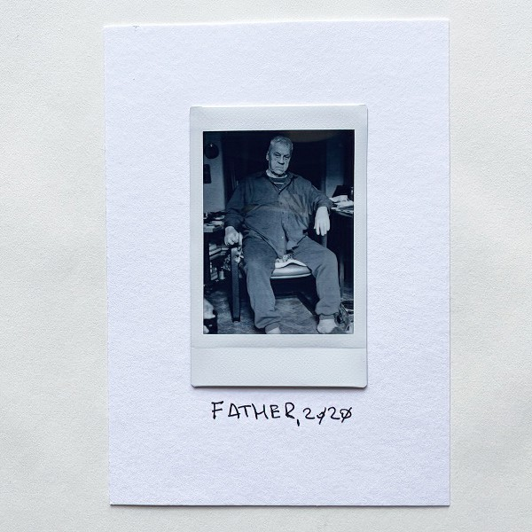
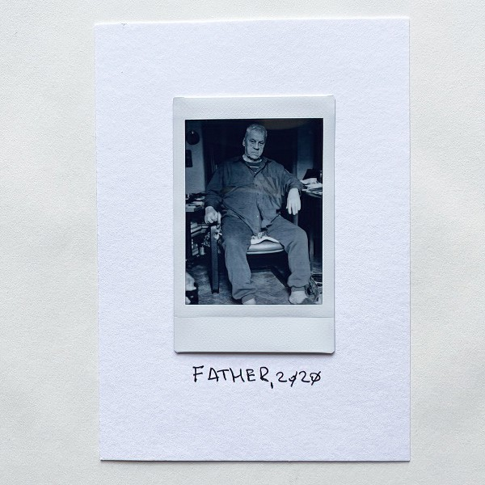
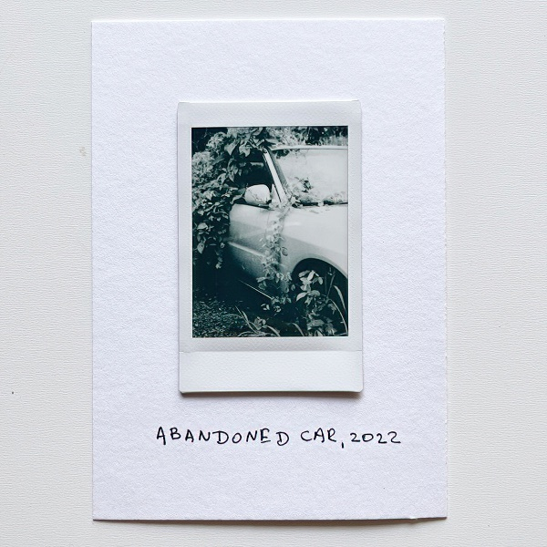
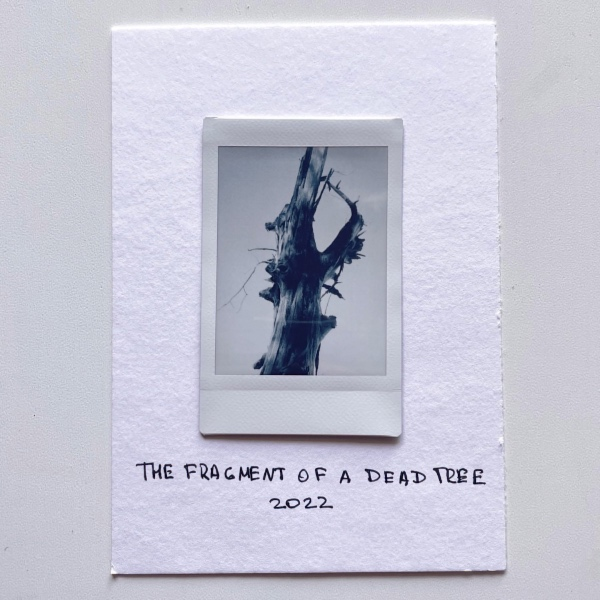

Отец, 2020

Отцу сегодня 85.

Отцу сегодня 85.

Пока мы жили в Невшехире, я снял несколько своих автопортретов, а Захар, увидев это, решил снять себя. Только самостоятельно сжать грушу у него не получилось, так что пришлось помочь.

В урочище Сандармох в 1937-1938 годах был тайно убит и захоронен 6241 человек.
Я побывал в этом месте в августе 2022 года.
Финализируют цитатой из нобелевской речи Сахарова:
Глубокоуважаемые дамы и господа!
Мир, прогресс, права человека - эти три цели неразрывно связаны, нельзя достигнуть какой-либо одной из них, пренебрегая другими...
Я убежден также, что свобода убеждений, наряду с другими гражданскими свободами, является основой научно-технического прогресса и гарантией от использования его достижений во вред человечеству.

В Тайланде природа забирает свое назад очень быстро.

Несмотря на то, что они выглядят, как список задач, это все же его "мысли")

Продолжаю эксперименты с форматом. Снимаю на Ляйку, проявляю, сканирую и печатаю на бумаге Instax.
The New York Times провели свое расследование убийств в Буче, и смогли идентифицировать российских военных, причастных к этим зверствам.

Снимок сделан ляйкой, а потом напечатан на бумаге для Instax'а
Хорошее интервью Аркадия Островского в Русских норм.